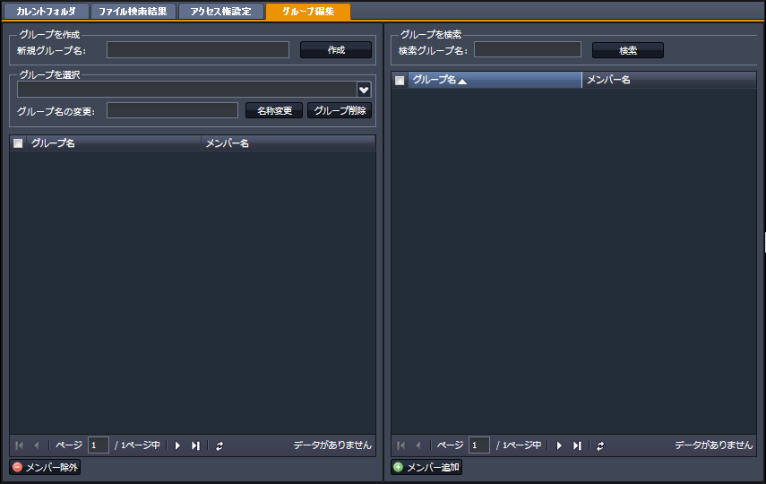
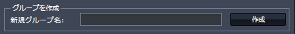
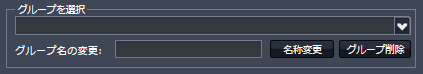
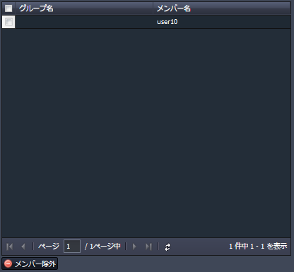
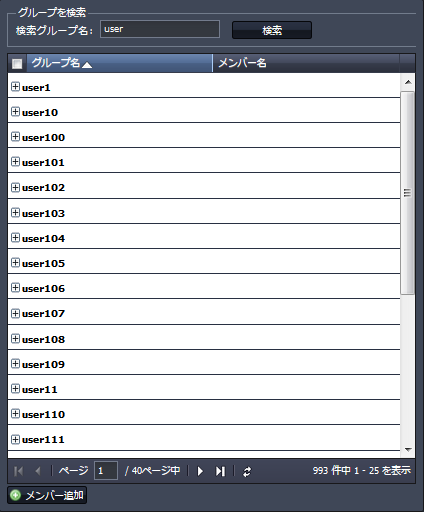
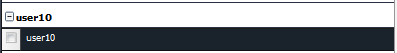
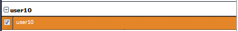
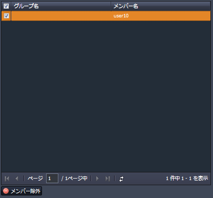

SecretFilesマニュアル
3. SecretFilesサービス(解説編)
3.2 各ペインの説明
3.2.3 中央ペイン
中央ペインには、次のタブが表示されています。

* ログインした方の権限によって、表示されるタブは異なります。
* このマニュアルでは、通常のご利用者が利用することのできる機能についてのみ説明します。
* ログインした方の権限によって、表示されるタブは異なります。
* このマニュアルでは、通常のご利用者が利用することのできる機能についてのみ説明します。
3.2.3.4 グループ編集
SecretFilesでは、利用者(ユーザ)の登録をすると同時に同名のグループが生成されます。これをプライムグループと呼ぶことにします。プライムグループはシステムの管理者しか作成(登録)することはできません。
プライムグループは、一番単位の小さなグループで、その中に別のグループを所属させることはできません。
(1) 利用者は任意のグループを新規に作成することができます。
(2) 利用者が作成したグループには、別のユーザやグループをメンバとして所属させることができます。
グループの作成ならびにグループへのメンバの追加、削除は「グループ編集」タブで行ないます。
中央ペインの上部に表示されている「グループ編集」タブをマウス左クリックして下さい。

新規グループの作成

左上に「グループを作成」という表示があります。
その中に、「新規グループ名」というフィールドがあります。
新規にグルーブを作成する場合には、そこに任意の文字列を入力して下さい。
新規グループ名:
任意の名称を入力して下さい。
* もし同一のグループ名が既に登録されている場合には、その名称では登録することができません。
画面には、「新規グループ作成失敗」とアラートが表示されますので、再入力して下さい。
新規グループの作成に成功すると、下の欄の「グループを選択」という表示の中に表示されるようになります。
グループの選択

「グループを選択」欄にある をクリックすると、一覧が表示されますので、選択して下さい。
そのグループに登録されているメンバ一覧が表示されます。
(* グループに登録されたグループはメンバと呼びます。)
(下の例では、メンバーはひとりだけ登録されています。)

グループ名、説明の変更
上記で選択したグループの名称を変更したり、その説明を変更する場合には、「変更後グループ名」と「説明」の両方またはいずれかのフィールドに文字列を入力して「名称等変更」ボタンをクリックして下さい。
グループ削除
グループを削除する場合には、「グループ削除」のボタンをクリックして下さい。
「作成したグループ」にて をクリックすると、削除したグループは表示されなくなります。
グループへのメンバー追加と削除
上記で選択したクリエイテッドグループに対して別のグループをメンバーとして追加する場合には、画面右のグループ検索ペインを使用します。
検索グループ名に検索するグループ名またはその一部を入力し「検索」ボタンをマウス左クリックします。
* ここでいう任意の文字列とは、検索しようとしているグループ名のすべてまたはその一部という意味です。
例えば、userという文字列が含まれているグループを検索する場合、「us」と入力しても構いません。
ただし、仮に「usa」というグループが存在していると、これも検索結果に表示されることになります。

検索結果は上の画像のように表示されます。
メンバー追加
左端の「+」アイコンをクリックすると、そのアイコンは「-」に変わり、すぐ下にグループのメンバーが表示されます。

メンバー表示の左端のチェックボックスをクリックして下さい。(複数のチェックが可能です。)

グルーブの選択が完了したら、下の「メンバー追加」ボタンをクリックして下さい。
選択したグループは、クリエイテッドグループのメンバーとして追加登録され、左側のクリエイテッドグループのリストがリフレッシュして、結果を表示します。
メンバー除外
クリエイテッドグループに追加したメンバーを除外するためには、グループ名・メンバー名の一覧にてチェックボックスをチェックした後に、グループ編集ペインの左下にある「メンバー除外」ボタンをクリックします。

ボタンを押したのちに、画面はリフレッシュして、選択したメンバーが除外された状態になります。